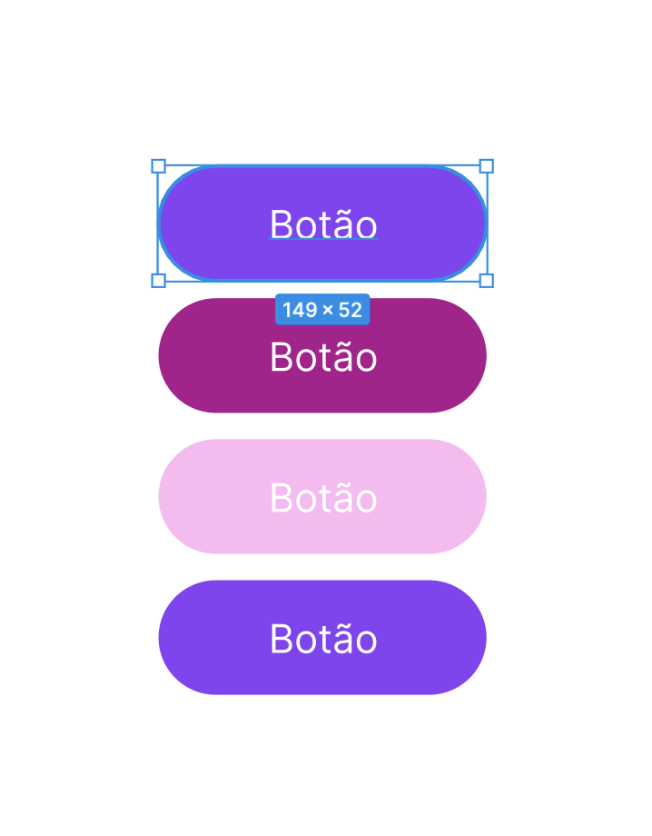
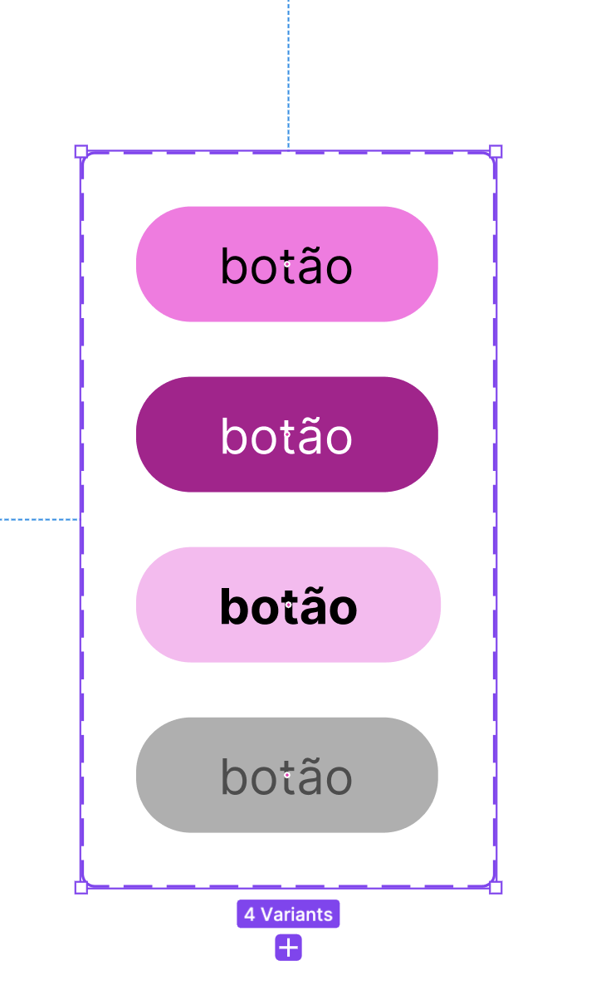

Criação dos Componentes Principais
da Interface
da Interface
Componentes · Instâncias · Main Component · Auto Layout · Variantes · Biblioteca de Interface
Components
Instances
Auto
Layout
Variantes
🎯 Objetivos da Aula
✔Compreender o conceito de componentes no Figma
✔Identificar elementos reutilizáveis em uma interface
✔Criar componentes utilizando boas práticas
✔Utilizar propriedades e variantes básicas
✔Organizar componentes em uma biblioteca simples
✔Aplicar componentes na Landing Page desenvolvida anteriormente
🔄
Revisando as Aulas Anteriores
Nas últimas aulas
aprendemos que uma interface profissional é construída em etapas.
Primeiro organizamos. Depois
estruturamos. Em seguida criamos os elementos reutilizáveis.
Organização
↓
Estrutura
↓
Elementos reutilizáveis
↓
Projeto profissional com Componentes
Nesta aula iremos transformar nossa
Landing Page em um projeto profissional utilizando Componentes.
1
Capítulo 1 — O que é um Componente?
Imagine que uma
Landing Page possui cinco botões iguais.
Se cada botão for desenhado
separadamente, qualquer alteração precisará ser feita cinco vezes. Agora imagine uma Landing
Page com cinquenta botões. O trabalho seria enorme.
Sem componentes

Cada um precisa ser alterado manualmente.
Com componentes
Main Component
Uma única alteração atualiza todos.

Uma única alteração atualiza todos.
Um componente é um
elemento reutilizável que pode ser utilizado diversas vezes na interface.
Quando alteramos o componente principal,
todas as suas cópias são atualizadas automaticamente. Esse conceito reduz retrabalho, aumenta a
consistência visual e facilita a manutenção do projeto.
🏢
Componentes no Mercado
Empresas dificilmente
desenham cada tela do zero.
Elas possuem bibliotecas contendo
centenas de componentes reutilizáveis. Essa biblioteca recebe o nome de Design System.
Botões
Campos de texto
Cards
Menus
Avatares
Modais
Barras de navegação
Ícones
✅
Vantagens dos Componentes
Os componentes oferecem diversas
vantagens. Quanto maior o projeto, maior a importância dos componentes.
reutilização
padronização
rapidez
manutenção simplificada
trabalho colaborativo
consistência visual
📌
Elementos que Devem Virar Componentes
Nem tudo precisa ser
um componente.
Devemos criar componentes para elementos
repetitivos. Sempre que um elemento aparecer várias vezes, considere transformá-lo em
componente.
Botões
Cards
Menus
Campos de formulário
Ícones
Badges
Tags
Avatares
Logo
Footer
Navbar
2
Capítulo 2 — Criando um Componente
Suponha que criamos um
botão.
O primeiro passo é selecionar todos os
elementos que fazem parte dele. Depois utilizamos o comando Create Component.
Create Component
Atalho:
Ctrl + Alt + K
macOS:
⌥ Option + ⌘ Command + K
Atalho:
Ctrl + Alt + K
macOS:
⌥ Option + ⌘ Command + K
Resultado
A partir desse momento o botão passa
a ser um componente.
O Figma adiciona um losango roxo indicando que aquele objeto é reutilizável.
O Figma adiciona um losango roxo indicando que aquele objeto é reutilizável.
🖼️ Espaço para imagem
— Criando componente no Figma
Inserir print do botão com o losango roxo de componente.
💎
Main Component e Instances
Main Component
O primeiro componente criado é chamado de
Main Component.
Ele é o componente principal.
Qualquer alteração realizada nele será refletida em todas as instâncias existentes no projeto.
Por isso devemos mantê-lo organizado.
Ele é o componente principal.
Qualquer alteração realizada nele será refletida em todas as instâncias existentes no projeto.
Por isso devemos mantê-lo organizado.
Instances
Quando arrastamos um componente para
outra tela, criamos uma Instance.
Ela continua ligada ao componente original.
Se alterarmos cor, raio da borda, tamanho ou fonte, todas as instâncias serão atualizadas automaticamente.
Ela continua ligada ao componente original.
Se alterarmos cor, raio da borda, tamanho ou fonte, todas as instâncias serão atualizadas automaticamente.
3
Capítulo 3 — Auto Layout + Componentes
Os melhores
componentes utilizam Auto Layout.
Imagine um botão com o texto “Entrar”.
Depois mudamos para “Criar Conta Gratuitamente”. Sem Auto Layout o botão quebra. Com Auto Layout
ele aumenta automaticamente.
Sem Auto Layout
O botão pode quebrar quando o texto
aumenta.
Com Auto Layout
O botão aumenta automaticamente
conforme o conteúdo.
🖼️ Espaço para imagem
— Botão com Auto Layout
Inserir comparação entre botão com texto curto e texto
longo ajustando automaticamente.
🔘
Estrutura de um Botão
Um botão normalmente
possui texto, padding interno, raio da borda, cor de fundo e alinhamento central.
O texto nunca deve ficar colado na borda.
Utilizamos espaçamentos internos consistentes.
Vertical: 12 ou 16 px
Horizontal: 24 ou 32 px
Alinhamento central
🃏
Criando um Card
Um Card normalmente possui imagem,
título, descrição e botão.
Imagem
↓
Título
↓
Descrição
↓
Botão
↓
Título
↓
Descrição
↓
Botão
Todos esses elementos devem estar dentro
de um Auto Layout vertical. O próprio Card pode ser transformado em componente.
🧭
Componentizando o Header
Uma barra de navegação costuma conter
Logo, Menu e Botão.
Logo
Menu
Botão
Cada parte pode ser um componente
individual. Depois todos eles formam um componente maior. Essa estratégia facilita alterações
futuras.
4
Capítulo 4 — Variantes
Nem sempre um
componente possui apenas uma aparência.
Um botão pode existir em diferentes
versões. Em vez de criar quatro componentes diferentes, utilizamos Variantes.
Botão
├── Primário
├── Secundário
├── Outline
└── Desabilitado
├── Primário
├── Secundário
├── Outline
└── Desabilitado
As Variantes agrupam diferentes estados
do mesmo componente. Todos pertencem ao mesmo componente.
🖼️ Espaço para imagem
— Variantes de botão
Inserir print do painel de variantes no Figma com
Primary, Secondary, Outline e Disabled.
⚡
Estados dos Componentes
Além da aparência, componentes também
possuem estados.
Default
Hover
Pressed
Focused
Disabled
Mesmo que não sejam utilizados nesta
aula, é importante compreender que eles existem e fazem parte do Design de Interfaces.
🏷️
Nomeando Componentes
Evite nomes genéricos. Essa organização
facilita a navegação em projetos grandes.
Errado
Rectangle 52
Botão Novo
Frame 16
Botão Novo
Frame 16
Correto
Button/Primary
Button/Secondary
Card/Product
Card/Benefit
Navbar/Desktop
Footer/Desktop
Button/Secondary
Card/Product
Card/Benefit
Navbar/Desktop
Footer/Desktop
📚
Organização da Biblioteca
Uma biblioteca simples pode ser
organizada assim:
Componentes
├── Buttons
├── Cards
├── Inputs
├── Icons
├── Navigation
├── Footer
├── Logo
├── Buttons
├── Cards
├── Inputs
├── Icons
├── Navigation
├── Footer
├── Logo
Essa estrutura será utilizada ao longo de
todo o projeto.
5
Capítulo 5 — Aplicando Componentes na Landing
Page
Agora iremos
transformar os elementos criados anteriormente em componentes.
Ao finalizar, todas as seções da Landing
Page deverão utilizar apenas componentes. Isso permitirá alterar rapidamente qualquer parte da
interface.
Header
Logo
Botão principal
Card de benefício
Footer
🖼️ Espaço para imagem
— Landing Page com componentes
Inserir print da Landing Page utilizando Navbar, Button,
Card e Footer como componentes.
✅
Boas Práticas
Crie componentes apenas para elementos reutilizáveis.
Utilize Auto Layout.
Nomeie corretamente.
Organize em páginas específicas.
Evite componentes duplicados.
Padronize espaçamentos.
Utilize uma hierarquia lógica de nomes.
🧪
Tutorial
Passo 1 — Abra a Landing Page desenvolvida nas aulas anteriores.
Passo 2 — Transforme o botão principal em componente.
Passo 3 — Crie três instâncias do botão.
Passo 4 — Altere o componente principal e observe que todas as instâncias serão atualizadas.
Passo 5 — Transforme o Card de Benefícios em componente.
Passo 6 — Crie três instâncias e altere apenas o conteúdo de cada uma.
Passo 7 — Crie o componente Navbar.
Passo 8 — Organize todos os componentes em uma página chamada Components.
📌
Atividade Prática
Desafio
Transformar a Landing Page criada nas
aulas anteriores em um projeto baseado em componentes.
Componentes
obrigatórios
Botão Primário
Botão Secundário
Card de Benefícios
Navbar
Footer
Logo
Campo de formulário opcional
Regras
Todos devem utilizar Auto Layout e
nomenclatura organizada.
⭐
Desafio Extra
Criar variantes para o
componente Button com, no mínimo, três estados visuais:
Primary
Secondary
Outline
Disabled opcional
Opcionalmente, adicionar o estado
Disabled para simular um botão desativado.
🏁
Resumo da Aula
Nesta aula, aprendemos que componentes tornam o projeto mais profissional, reutilizável e fácil
de manter. Com Main Components, Instances, Auto Layout, Variantes e uma biblioteca organizada, a
Landing Page passa a ter consistência visual e estrutura semelhante aos projetos reais do
mercado.
🧩
Componentes
💎
Main Component
📄
Instances
📱
Auto Layout
⚡
Variantes